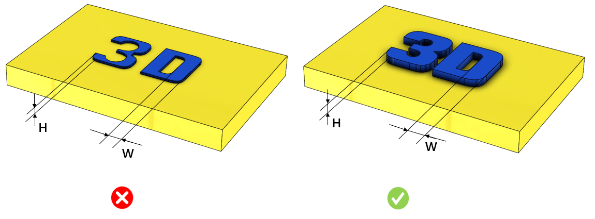

本ルールは、設定された値に基づいて、刻印推奨寸法（テキストの高さおよび幅）をチェックします。
テキスト文字は、積層造形部品において追加情報を伝えるための小さな形状要素です。
文字表記
識別マーク
重要な指示、警告
法的および規制情報
会社ロゴ、シンボル
テキスト文字は付加製造部品の小さな形状要素であり、造形表面から浮き上がっている方が視認性が向上します。テキストの高さおよび幅は、造形物の表面からはっきりと確認できる必要があります。サイズが小さすぎる場合、造形中にモデルと融合してしまう可能性があります。
ルール構成では、Fused Deposition Modeling（FDM）、Stereolithography（SLA）、Selective Laser Sintering（SLS）などの製造プロセスと、それぞれに対応する推奨テキストパラメータ（テキストの高さおよび幅）を設定することができます。

H = 高さ
W = 幅